This study guide covers all exam objectives for the AWS Certified AI Practitioner certification. The exam validates foundational knowledge of AI, ML, and generative AI concepts along with AWS services for implementing AI solutions.
| Domain | Weight | Key Topics |
|---|---|---|
| Domain 1 Fundamentals of AI and ML | 20% | AI concepts, ML lifecycle, use cases |
| Domain 2 Fundamentals of Generative AI | 24% | Gen AI concepts, transformers, prompt engineering |
| Domain 3 Applications of Foundation Models | 28% | RAG, agents, model selection, customization |
| Domain 4 Guidelines for Responsible AI | 14% | Fairness, transparency, governance |
| Domain 5 Security, Compliance, Governance | 14% | IAM, data privacy, model security |
Artificial Intelligence (AI): Computer systems capable of performing tasks that typically require human intelligence, including visual perception, speech recognition, decision-making, and language translation.
| Concept | Definition | Relationship |
|---|---|---|
| AI | Broad field of creating intelligent systems | Umbrella term |
| ML | Algorithms that learn from data | Subset of AI |
| Deep Learning | Neural networks with multiple layers | Subset of ML |
Training on labeled data (input-output pairs).
Use Cases: Fraud detection, image classification, price prediction
Finding structure in data without labels.
Use Cases: Customer segmentation, anomaly detection
Learning through interaction and feedback (rewards/penalties).
Use Cases: Game playing, robotics, autonomous systems
Model generates its own labels from data structure.
Examples: BERT, GPT pre-training
| Year | Milestone |
|---|---|
| 1956 | Dartmouth Conference - AI term coined |
| 1980s | Backpropagation algorithm; Hopfield Network |
| 2012 | AlexNet breakthrough (deep learning) |
| 2017 | Transformer architecture introduced |
| 2024 | Nobel Prize in Physics for ML (Hopfield & Hinton) |
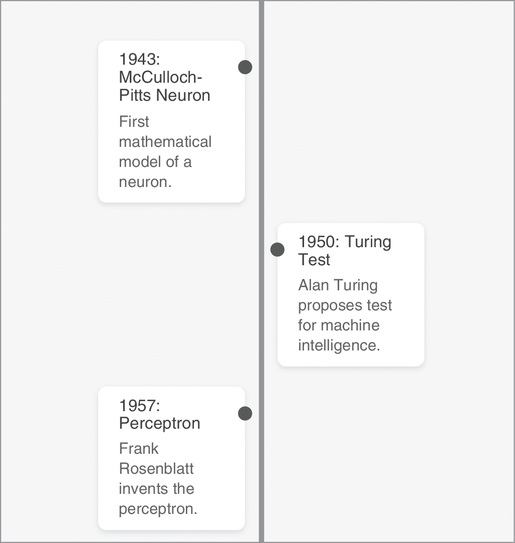
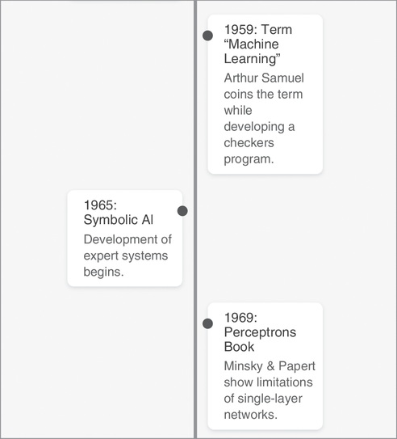
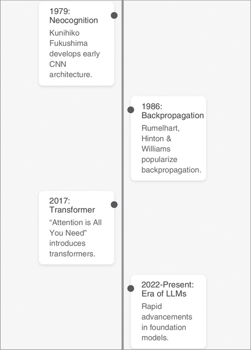
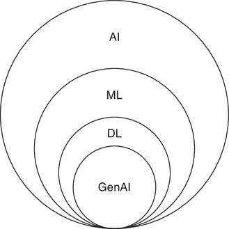
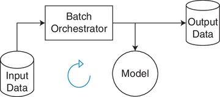
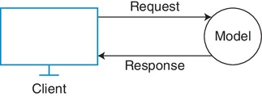
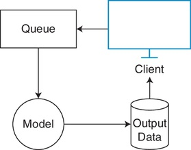
Generative AI: AI systems that create new content (text, images, audio, video) rather than just classifying or predicting.
| Concept | Definition | Example |
|---|---|---|
| Tokens | Atomic units of text | "Tokenization" → ["Token", "ization"] |
| Embeddings | Vectors representing tokens in high-dimensional space | "king" and "queen" cluster together |
| Chunking | Grouping related tokens | "Gen AI" as single concept |
Large, pre-trained models serving as base for various tasks:
| Model Type | Description |
|---|---|
| Vision Transformers (ViT) | Process images as patches (tokens) |
| Audio Transformers | Process audio segments as tokens |
| Multi-modal Transformers | Handle text, images, audio together |
Learn by adding noise to data and reversing the process:
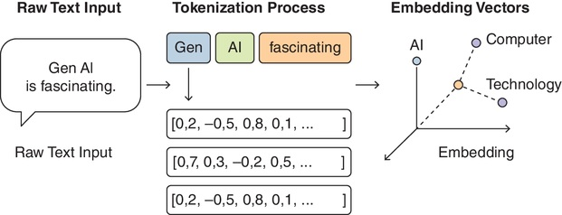
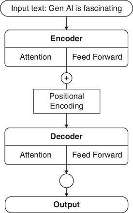
| Application | AWS Service | Benefit |
|---|---|---|
| Medical image analysis | SageMaker | Early disease detection |
| Drug discovery | Custom models | Accelerated research |
| Clinical documentation | Amazon Transcribe Medical | Reduced admin burden |
| Application | AWS Service |
|---|---|
| Fraud detection | SageMaker, Fraud Detector |
| Risk assessment | Custom models |
| Customer service | Amazon Lex |
| Application | AWS Service |
|---|---|
| Product recommendations | Amazon Personalize |
| Demand forecasting | Amazon Forecast |
| Visual search | Amazon Rekognition |
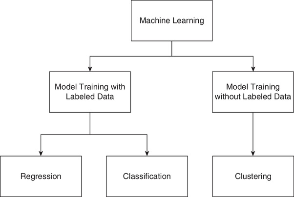


┌─────────────────────────────────────────┐
│ GENERATIVE AI (Application Builders) │
│ Amazon Bedrock, Amazon Q, PartyRock │
├─────────────────────────────────────────┤
│ AI SERVICES (Pre-trained APIs) │
│ Comprehend, Rekognition, Transcribe, │
│ Translate, Polly, Textract, Lex │
├─────────────────────────────────────────┤
│ ML SERVICES (ML Engineers) │
│ SageMaker Studio, Canvas, JumpStart │
└─────────────────────────────────────────┘
| Feature | Description |
|---|---|
| Choice of Models | Multiple FMs from Amazon, Anthropic, AI21, Meta, Stability AI |
| Bedrock Playground | Interactive environment for testing models |
| Agents | Execute complex multi-step tasks |
| Knowledge Bases | Managed RAG with enterprise data |
| Guardrails | Safety controls and content filtering |
| Parameter | Description | Best For |
|---|---|---|
| Temperature | Controls randomness (0.0-1.0+) | Low=deterministic, High=creative |
| Top-p | Cumulative probability threshold | Nucleus sampling control |
| Top-k | Limit to top K tokens | Vocabulary diversity |
| Model | Best For |
|---|---|
| On-Demand | Variable workloads, experimentation (pay per token) |
| Provisioned Throughput | Predictable traffic, guaranteed performance |
| Service | Purpose | Use Case |
|---|---|---|
| Amazon Comprehend | NLP (sentiment, entities, syntax) | Content analysis |
| Amazon Translate | Language translation | Localization |
| Amazon Transcribe | Speech-to-text | Captioning, dictation |
| Amazon Polly | Text-to-speech | Voice applications |
| Amazon Lex | Build conversational interfaces | Chatbots |
| Amazon Rekognition | Image/video analysis | Object detection, facial analysis |
| Amazon Textract | Document text extraction | OCR, forms processing |
| Amazon Personalize | Real-time recommendations | E-commerce, media |
| Category | Component | Purpose |
|---|---|---|
| Development | SageMaker Studio | Integrated ML IDE |
| Studio Lab | Free Jupyter environment | |
| Canvas | No-code model building | |
| JumpStart | Pre-built models and solutions | |
| Operations | Pipelines | Orchestrate ML workflows |
| Model Registry | Version and manage models | |
| Model Monitor | Production monitoring | |
| Endpoints | Real-time inference |
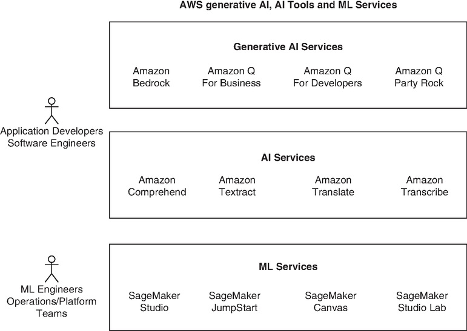

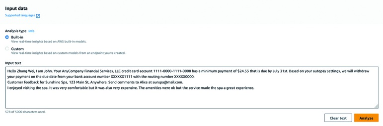
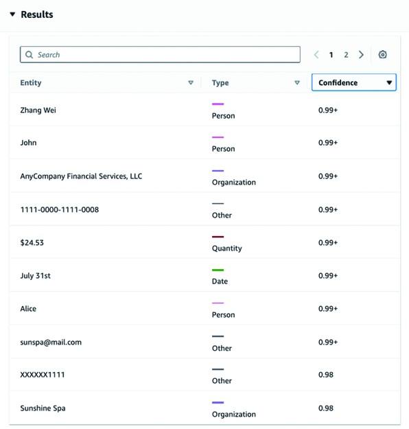
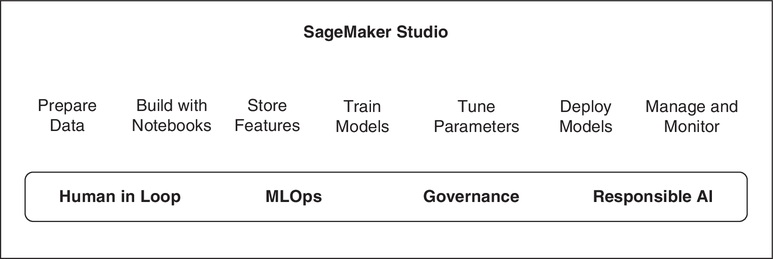
| Factor | Considerations |
|---|---|
| Task Type | Text generation, summarization, classification, code |
| Performance | Accuracy, latency, throughput requirements |
| Cost | Per-token pricing, provisioned throughput options |
| Context Window | Max input/output tokens needed |
| Category | Best For |
|---|---|
| Amazon Nova | General purpose, cost-effective |
| Anthropic Claude | Reasoning, safety, long context |
| Meta Llama | Open-weight, customizable |
| Stability AI | Image generation |
| Component | Purpose | Example |
|---|---|---|
| Instruction | Clear task direction | "Summarize the following" |
| Context | Background information | "As a financial advisor..." |
| Examples | Demonstrate desired output | "Input: X, Output: Y" |
| Constraints | Limit the response | "in 50 words or less" |
| Format | Specify output structure | "as a bullet-point list" |
| Pattern | Description |
|---|---|
| Zero-shot | No examples provided |
| Few-shot | Provide 2-3 examples |
| Chain-of-Thought | Guide step-by-step reasoning |
| System Prompting | Set global behavior/context |
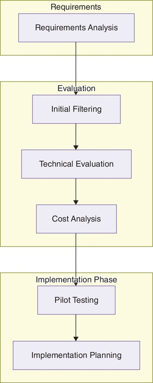
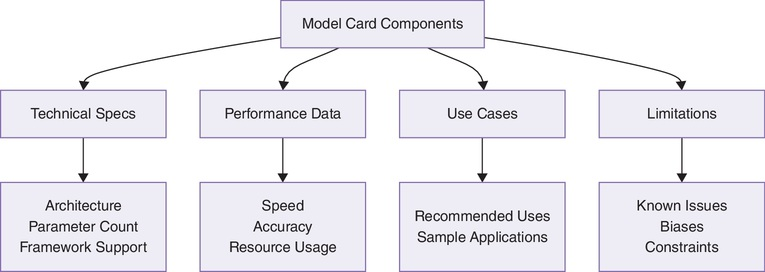
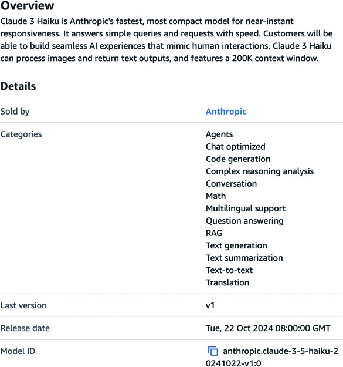
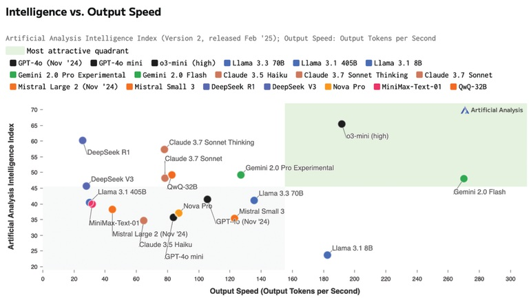
| Component | Purpose | AWS Service |
|---|---|---|
| Vector Store | Store document embeddings | OpenSearch, Aurora, RDS |
| Embedding Model | Convert text to vectors | Titan Embeddings |
| Retriever | Find relevant documents | Bedrock Knowledge Bases |
| Capability | Description |
|---|---|
| Action Groups | Define APIs the agent can call |
| Knowledge Bases | Integrate RAG for contextual responses |
| Session Management | Maintain conversation state |
| Planning | Multi-step reasoning and task decomposition |
User Input → Agent → Foundation Model → Action Planning
↓
Knowledge Base (RAG)
↓
API Execution → Response
| Capability | Description |
|---|---|
| Document Processing | Extract structured data from documents |
| Video Analysis | Generate summaries, detect events |
| Image Analysis | Content detection, inappropriate content filtering |
| Visual Grounding | Link outputs to source locations |
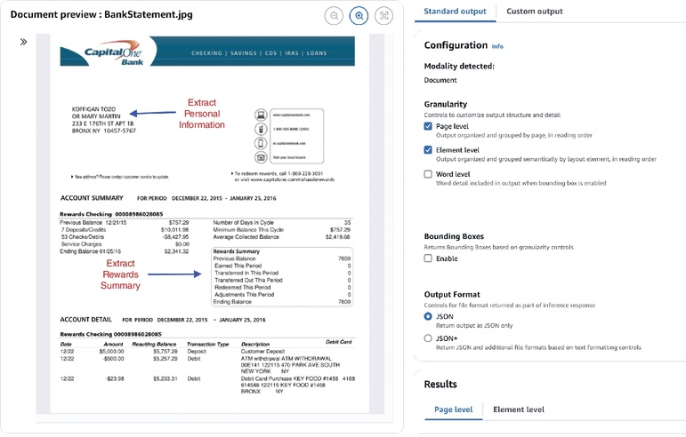
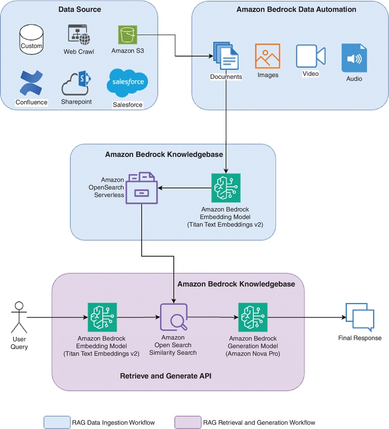
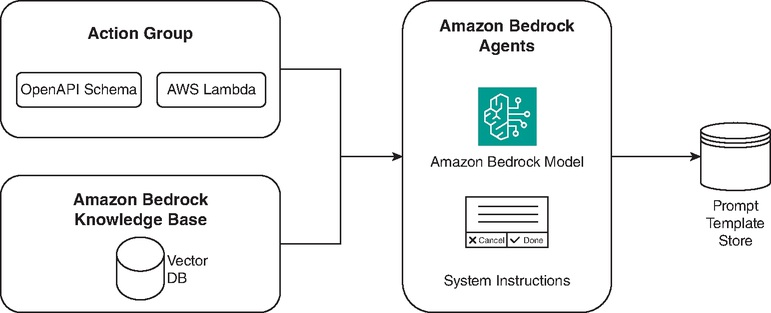
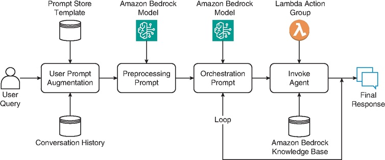
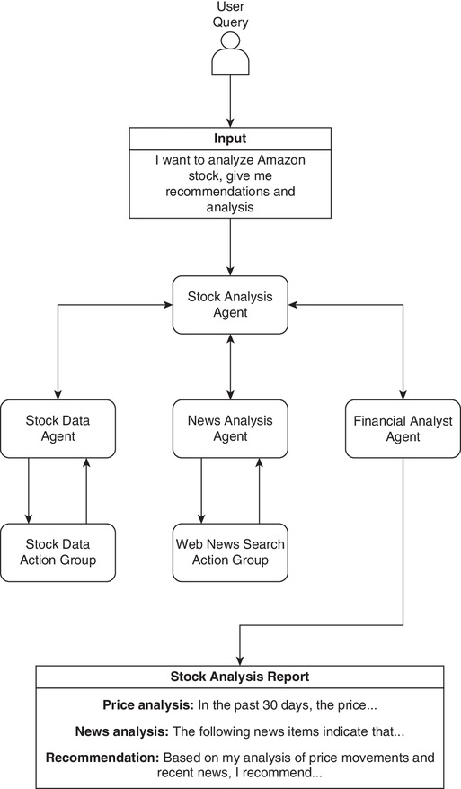
| Attribute | Description |
|---|---|
| Definition | Further training on domain-specific labeled data |
| Data Required | Input-output pairs relevant to task |
| Benefit | Improved accuracy for specific use cases |
| Use Cases | Specialized terminology, brand voice, specific tasks |
| Attribute | Description |
|---|---|
| Definition | Training on unlabeled domain data to expand knowledge |
| Data Required | Large corpus of domain text |
| Benefit | Better understanding of specialized vocabulary |
| Attribute | Description |
|---|---|
| Definition | Transfer knowledge from large model to smaller model |
| Benefit | Faster inference, lower cost, smaller footprint |
| Trade-off | Some accuracy loss vs. original large model |
| Metric | Description |
|---|---|
| Accuracy | Correctness of responses |
| Robustness | Performance under perturbations |
| Toxicity | Harmful content detection |
| Semantic Similarity | Meaning preservation |
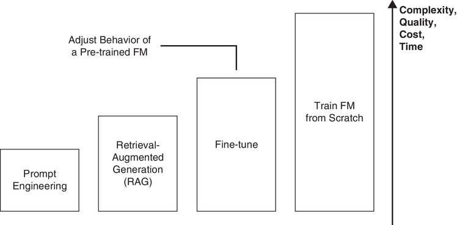
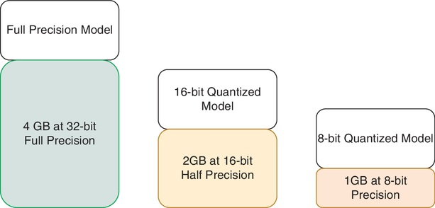
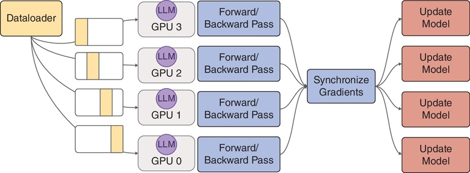
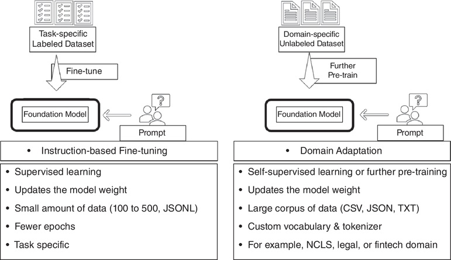
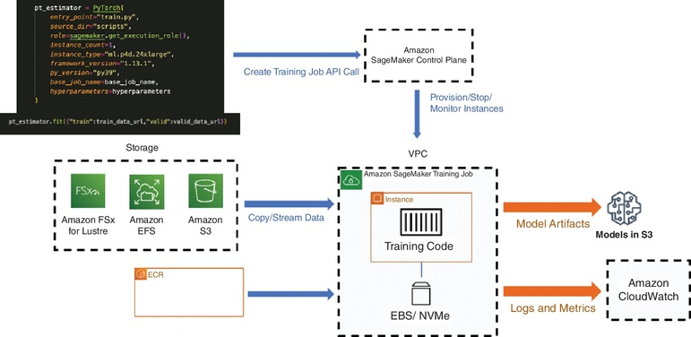
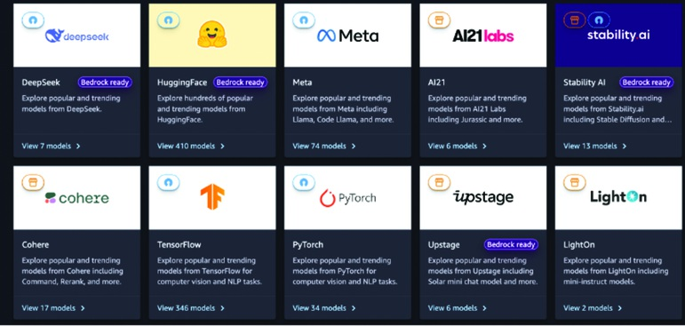
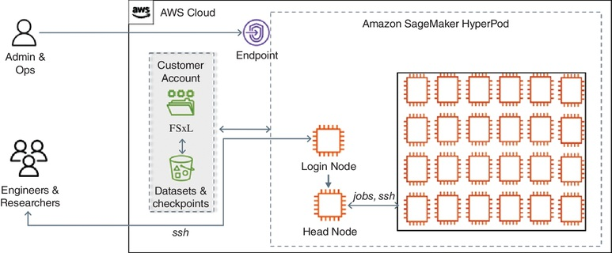
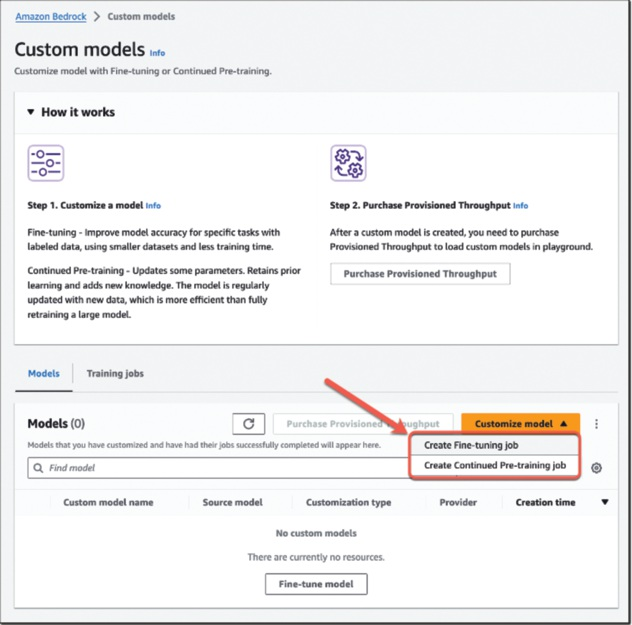
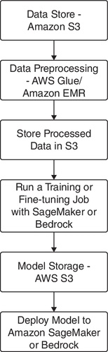
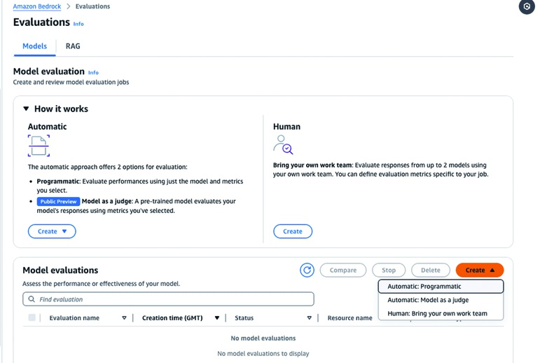
| Aspect | DevOps | MLOps |
|---|---|---|
| Code | Version controlled | Version controlled |
| Data | Static | Evolves over time |
| Models | N/A | Require retraining |
| Testing | Unit/integration | Model performance, data drift |
| Monitor Type | Purpose |
|---|---|
| Data Quality | Detect schema and statistical changes |
| Model Quality | Track accuracy metrics over time |
| Bias Drift | Monitor for fairness metric changes |
| Feature Attribution Drift | Detect important feature changes |
| Strategy | Description | Use Case |
|---|---|---|
| Blue/Green | Parallel environments, instant switch | Zero-downtime updates |
| Canary | Gradual traffic shift | Risk mitigation |
| A/B Testing | Split traffic for comparison | Model comparison |
| Shadow | Mirror traffic, no user impact | Validation before launch |
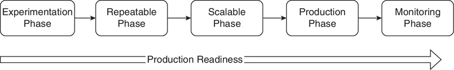
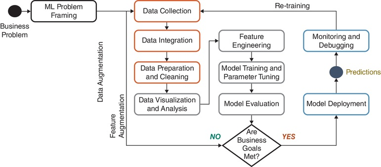
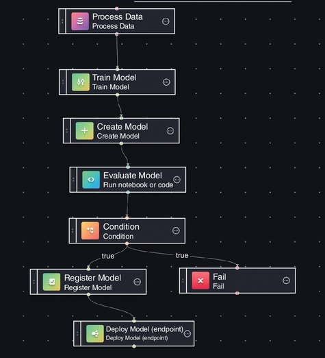
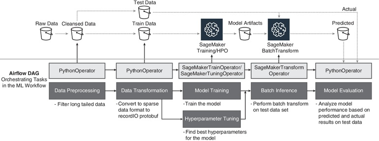
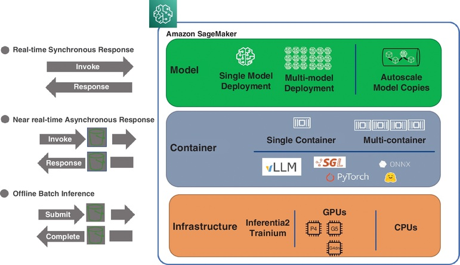
| Capability | Purpose |
|---|---|
| Bias Detection | Pre-training and post-training bias metrics |
| Feature Importance | SHAP values for explainability |
| What-if Analysis | Test model behavior under changes |
| Report Generation | Comprehensive bias and explainability reports |
| Feature | Description |
|---|---|
| Content Filters | Block harmful content categories |
| Denied Topics | Prevent specific subjects |
| Word Filters | Block specific words/phrases |
| PII Redaction | Remove sensitive information |
| Contextual Grounding | Check response relevance to source |
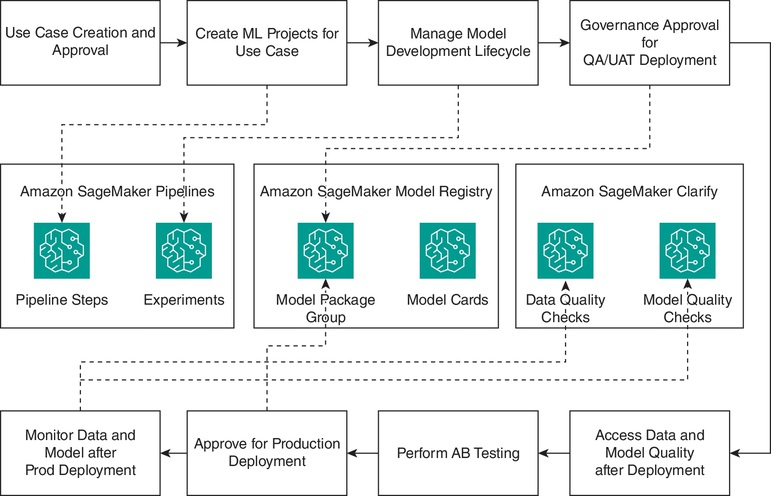
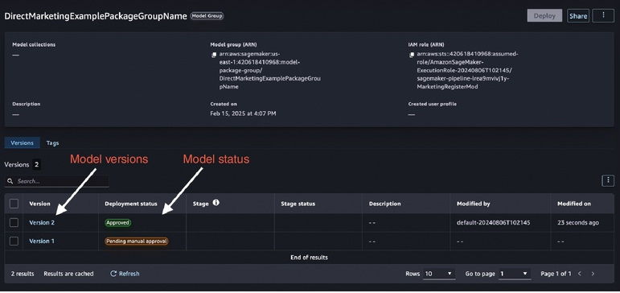
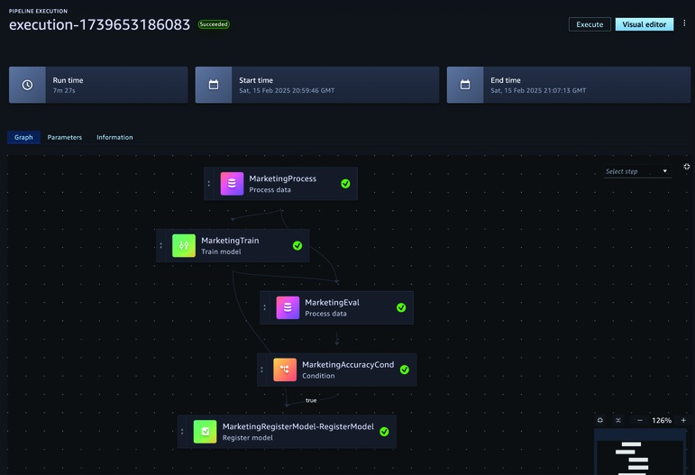
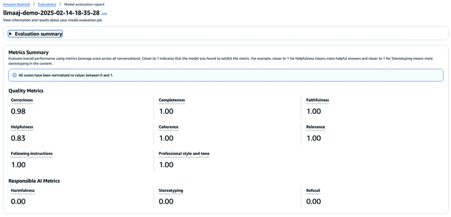
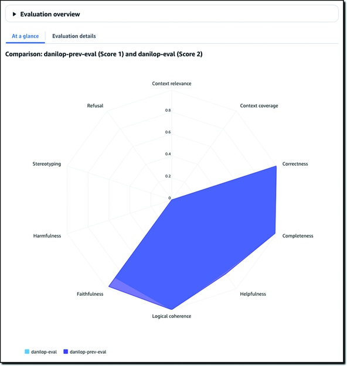
| Threat | Description | Mitigation |
|---|---|---|
| Prompt Injection | Malicious input to manipulate output | Input validation, guardrails |
| Data Poisoning | Corrupting training data | Data validation, monitoring |
| Model Extraction | Stealing model through queries | Rate limiting, output filtering |
| Membership Inference | Determining if data was in training | Differential privacy |
| Service | Purpose |
|---|---|
| IAM | Fine-grained access control |
| KMS | Encryption key management |
| CloudTrail | Audit logging |
| PrivateLink | Private connectivity |
| VPC | Network isolation |
| Layer | Implementation |
|---|---|
| At Rest | KMS encryption for S3, databases |
| In Transit | TLS 1.2+ for all communications |
| In Use | Nitro Enclaves for sensitive processing |
| Program | Description |
|---|---|
| SOC 1/2/3 | Service Organization Controls |
| ISO 27001 | Information security management |
| HIPAA | Healthcare data protection |
| GDPR | EU data protection |
| PCI DSS | Payment card security |
| FedRAMP | US government cloud security |
| Tool | Purpose |
|---|---|
| AWS Config | Track resource configuration changes |
| CloudTrail | Log all API activity |
| Security Hub | Centralized security findings |
| Audit Manager | Continuous audit evidence collection |
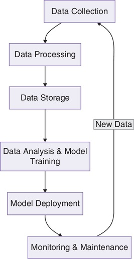
| Use Case | Recommended Service |
|---|---|
| Build Gen AI apps with FMs | Amazon Bedrock |
| No-code ML model building | SageMaker Canvas |
| Production ML platform | SageMaker Studio |
| Text analysis (NLP) | Amazon Comprehend |
| Image/video analysis | Amazon Rekognition |
| Speech-to-text | Amazon Transcribe |
| Text-to-speech | Amazon Polly |
| Language translation | Amazon Translate |
| Document processing | Amazon Textract |
| Conversational AI | Amazon Lex |
| Personalization | Amazon Personalize |
| Fraud detection | Amazon Fraud Detector |
| Task | Recommended Model Type |
|---|---|
| General text generation | Amazon Nova, Claude |
| Code generation | Claude, Amazon Nova |
| Long document analysis | Claude (200K context) |
| Image generation | Stability AI SDXL |
| Embeddings | Titan Embeddings |
| Cost-sensitive workloads | Amazon Nova Micro |
| Scenario | Likely Answer |
|---|---|
| Need pre-trained API for text analysis | Amazon Comprehend |
| Build Gen AI app without managing infrastructure | Amazon Bedrock |
| Ground LLM responses in company data | RAG with Bedrock Knowledge Bases |
| No-code ML for business users | SageMaker Canvas |
| Monitor model performance in production | SageMaker Model Monitor |
| Detect bias in ML models | SageMaker Clarify |
| Content filtering for Gen AI | Bedrock Guardrails |